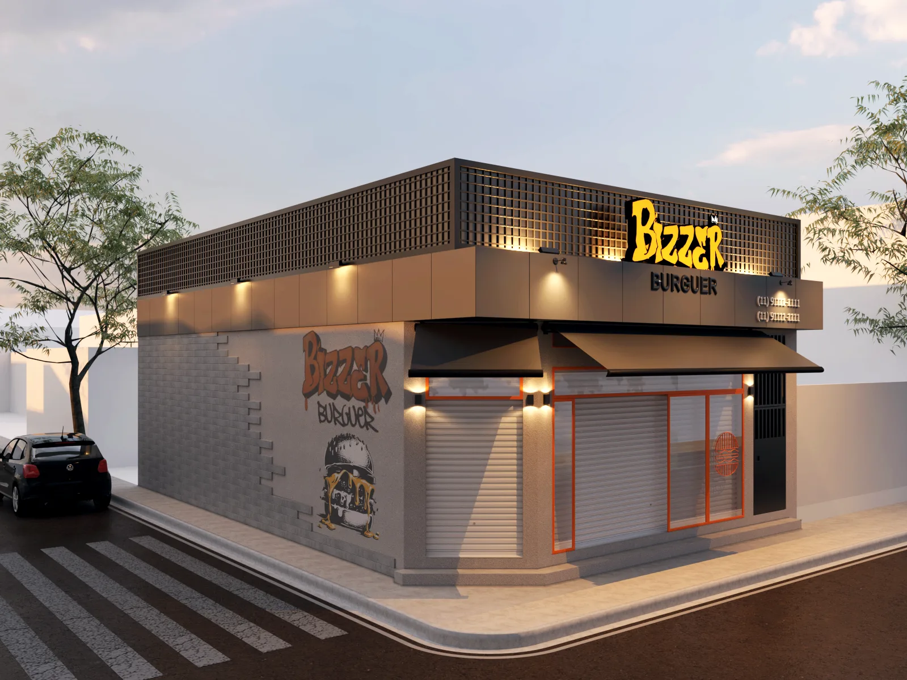
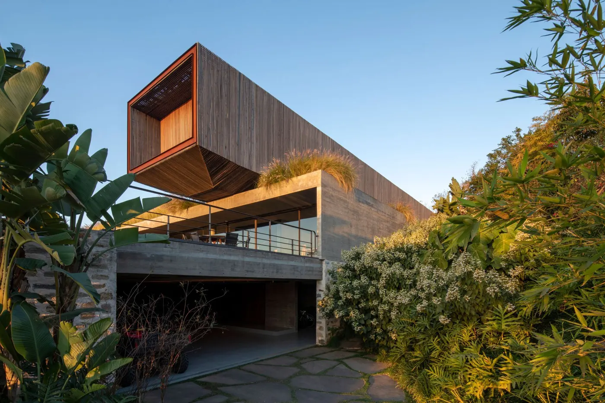
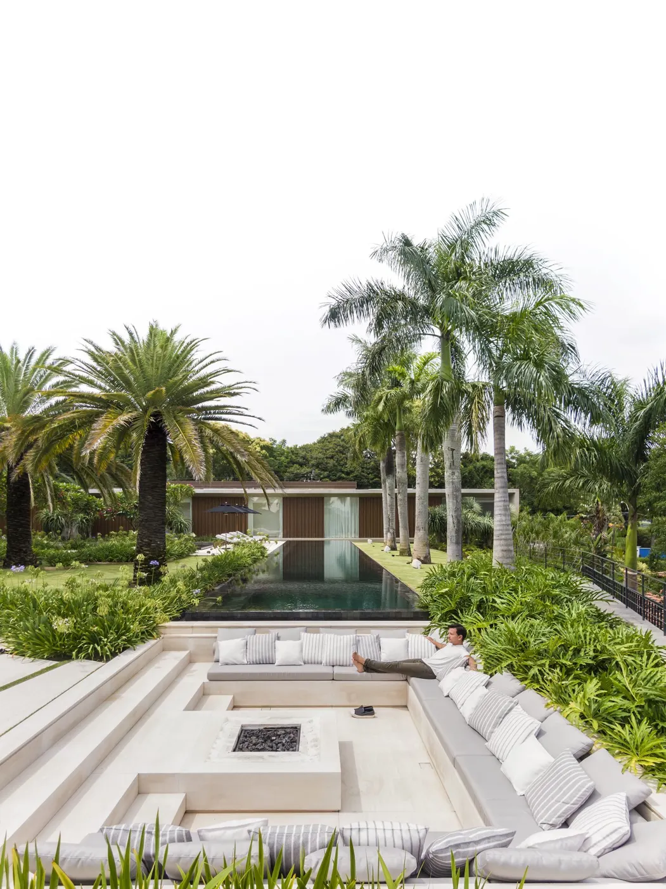
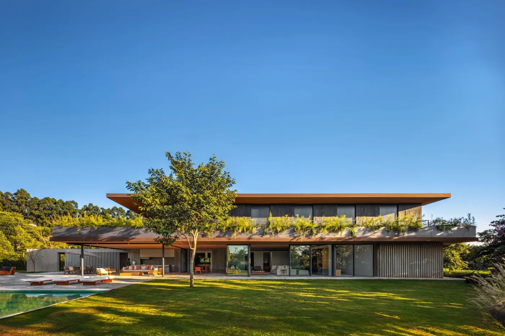
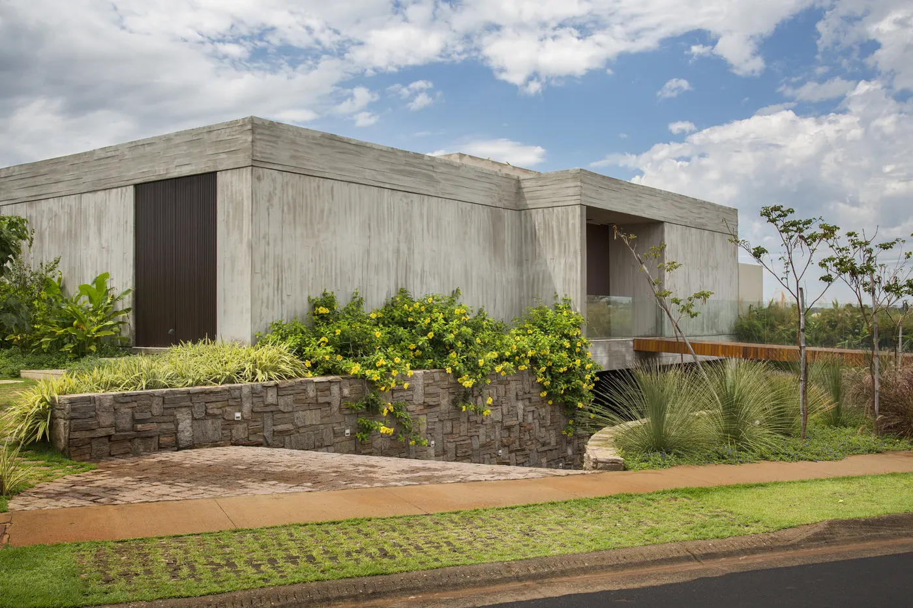
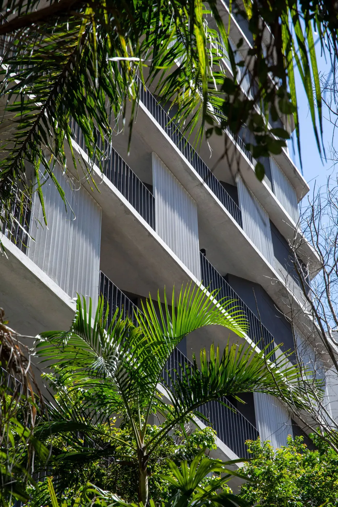
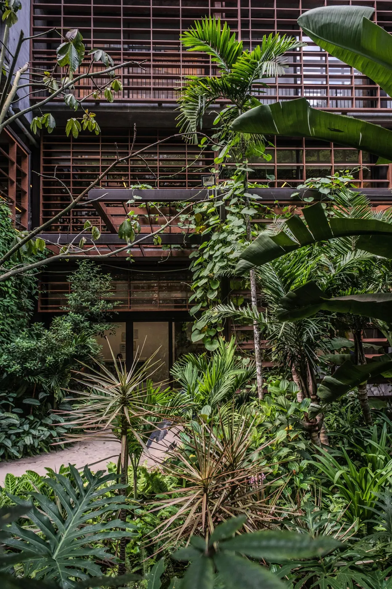
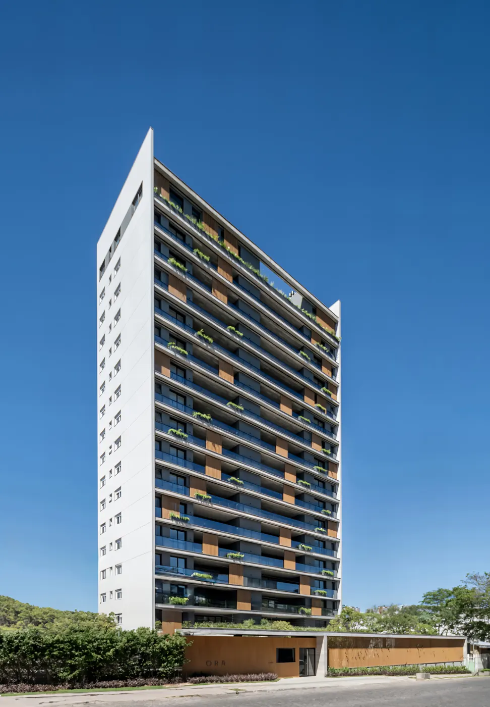
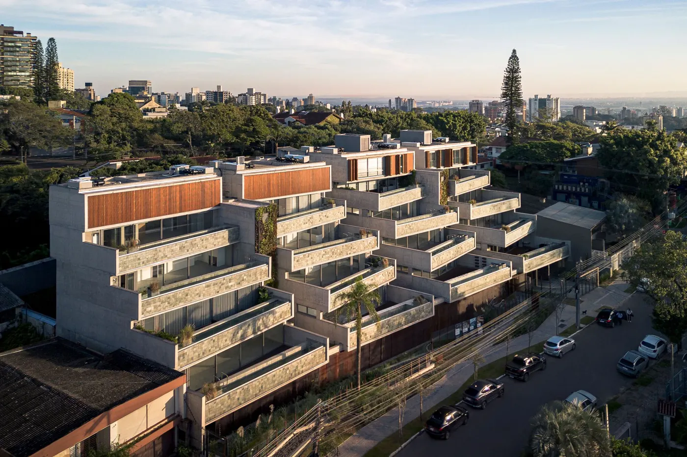

Do traço à obra.
Cada projeto nasce de uma escuta atenta e termina em espaço construído: arquitetura, interiores e paisagismo pensados como uma só linguagem.

Bizzer Burguer
Fachada de esquina que vira marca: brise metálico em grelha, luz rasante na platibanda e arte urbana em diálogo com a rua.
Paisagismo que inspira.
Projetos executados que admiramos pela forma como a vegetação constrói o espaço. São referências de outros escritórios, não projetos MOSARQ, e os créditos de cada um estão abaixo.
Residências

Residência SerraMarcelo Couto Arquitetura · paisagismo Rodrigo OliveiraVer na fonte (ArchDaily, abre em nova aba) ↗ 
Jardim CGD GramadoAlex Hanazaki PaisagismoVer na fonte (ArchDaily, abre em nova aba) ↗ 
Casa FloreiraMatheus Farah + Manoel Maia ArquiteturaVer na fonte (ArchDaily, abre em nova aba) ↗ 
Quinta do Golfe 2Solange Calio Arquitetos · paisagismo Luciano FiaschiVer na fonte (ArchDaily, abre em nova aba) ↗
Edifícios e condomínios

Edifício Onze22TriptyqueVer na fonte (ArchDaily, abre em nova aba) ↗ 
Torre Mata AtlânticaBenedito Abbud Arquitetura PaisagísticaVer na fonte (ArchDaily, abre em nova aba) ↗ 
Edifício FloraIDEIA1Ver na fonte (ArchDaily, abre em nova aba) ↗ 
CAP 1 Três FigueirasOSPA Arquitetura e UrbanismoVer na fonte (ArchDaily, abre em nova aba) ↗
Imagens: créditos de fotografia nas publicações originais do ArchDaily Brasil. Direitos reservados aos autores; uso como referência nesta demonstração.
Seu projeto pode ser o próximo.
Converse com Johnathan Mosanik Antoneti sobre arquitetura, interiores e paisagismo.